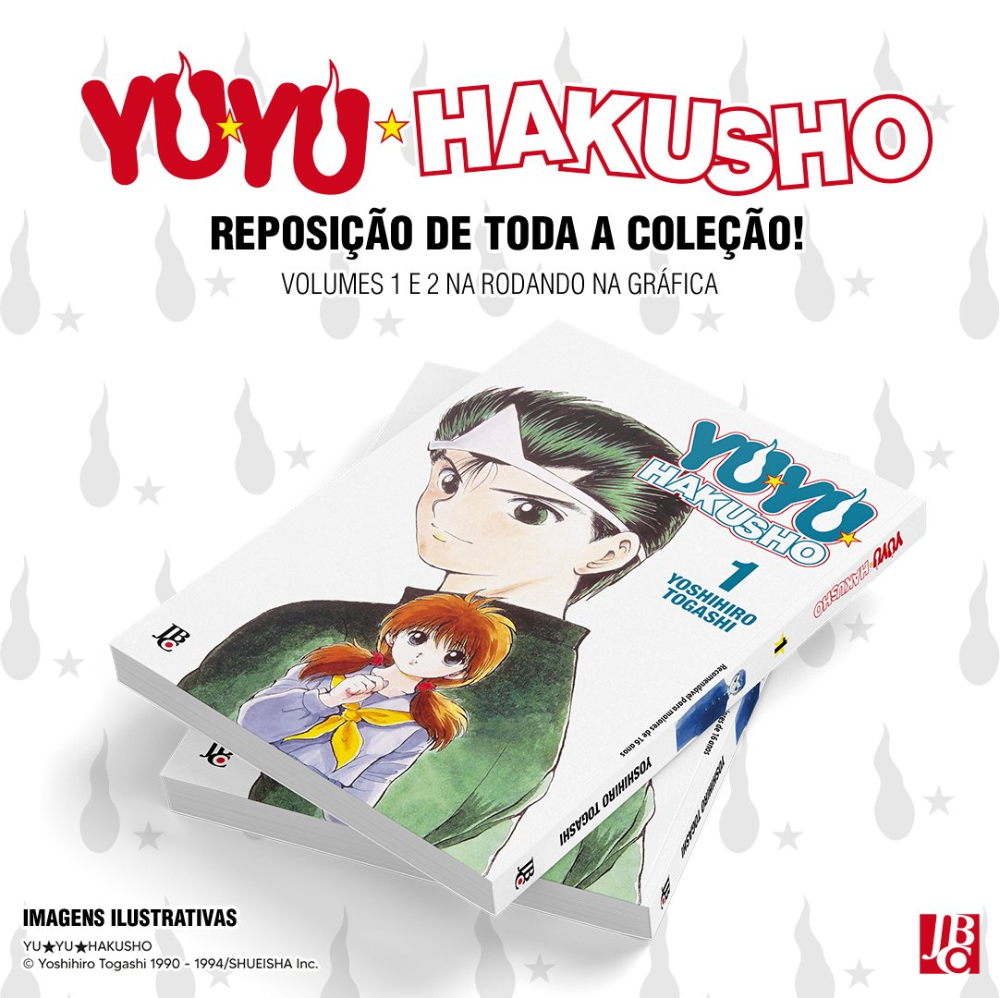

Coleção completa de Yu Yu Hakusho terá reimpressão pela JBC

Previsão do início da reposição é para dezembro.
Foi divulgado pela JBC que a edição especial de Yu Yu Hakusho ganhará uma reposição em breve. Os planos é que os dois primeiros volumes cheguem ainda em dezembro de 2022, durante a CCXP. A coleção completa será reimpressa.
TA reimpressão de Yu Yu Hakusho chega no formato 13,5 x 20,5 cm, com miolo em papel offset 75g em 200 páginas no primeiro volume. O preço será de R$33,90 por volume.

Sinopse:
Yusuke Urameshi – um jovem delinquente rude, violento e impaciente – parece só dar dor de cabeça para sua mãe, professores e vizinhança. Até que, um dia, depois de salvar um garotinho, acaba morrendo atropelado por um carro. Porém, como sua morte não era esperada pelo Mundo Espiritual, a ele é dada a chance de voltar à vida caso consiga passar pelo Teste da Ressureição. Acompanhado de Botan, a guia do Mundo Espiritual, Yusuke irá viver aventuras sobrenaturais até poder retornar ao seu corpo. (via JBC).
Yu Yu Hakusho é um incontestável clássico da revista Shonen Jump. A obra com autoria de Yoshihiro Togashi foi publicada no Japão entre 1990 e 1994, resultando em 19 volumes encadernados pela Shueisha. No Brasil, o mangá foi publicado duas vezes pela JBC, pela primeira entre 2002 e 2004 e pela segunda entre 2014 e 2016, sendo essa última a versão que ganhará reposição.
A adaptação animada de Yu Yu Hakusho foi exibida no Japão entre 1992 e 1995, resultando em 112 episódios. O anime de produção do estúdio Pierrot chegou ao Brasil pela primeira em 1997 com exibição pela extinta Rede Manchete. Aqui na Crunchyroll, o anime está disponível com legendas em inglês.
Fonte:crunchyroll